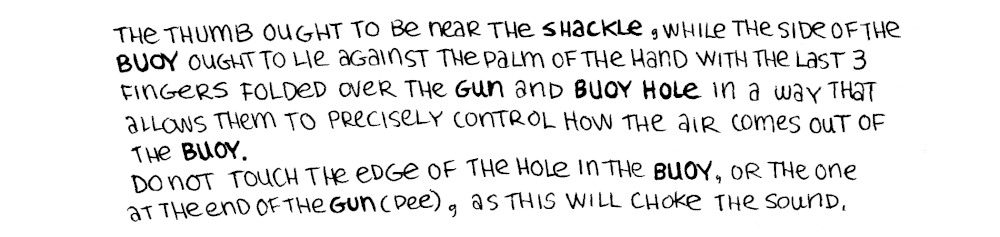
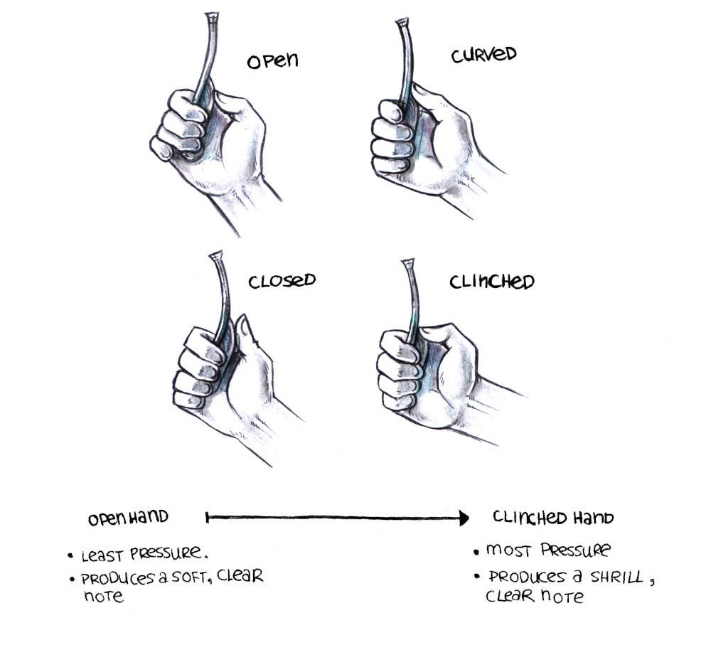
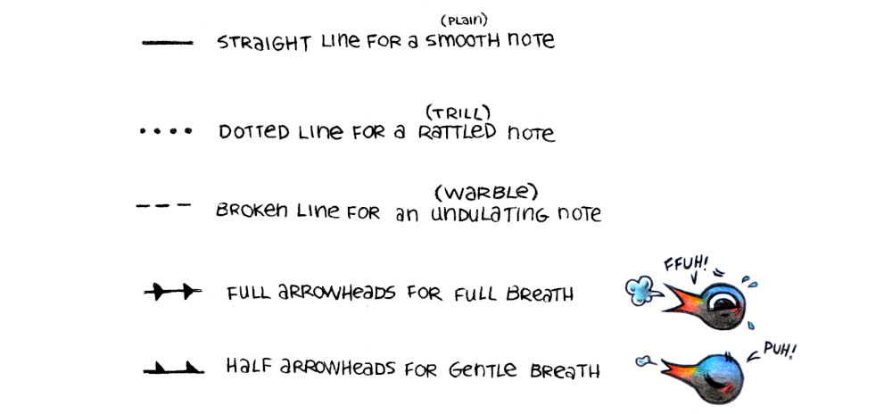
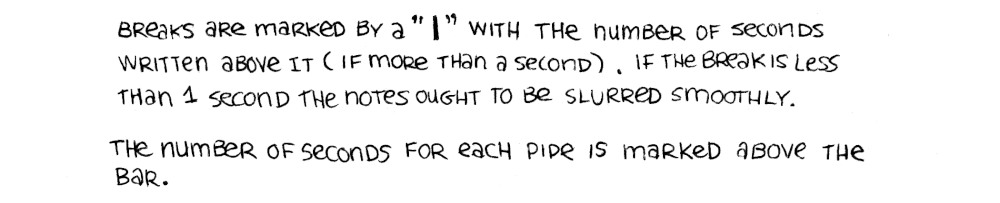
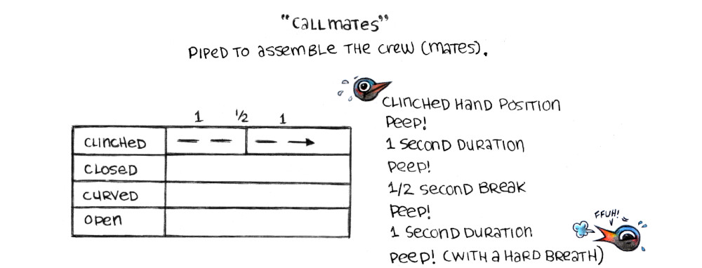
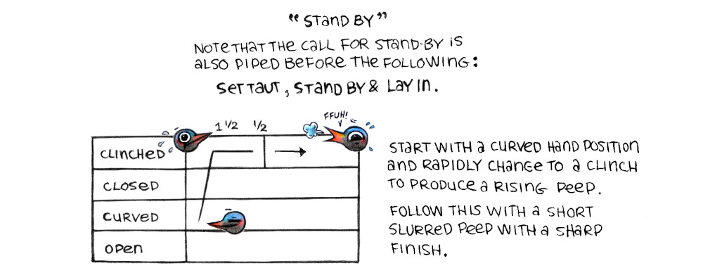
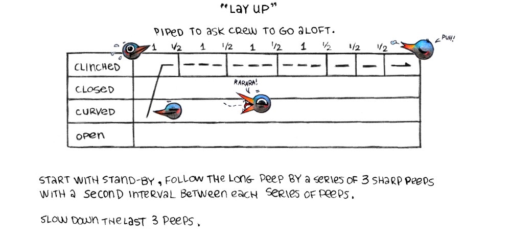
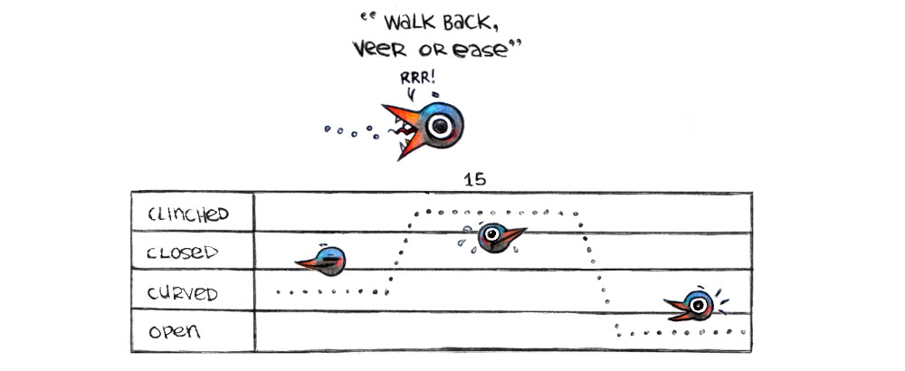
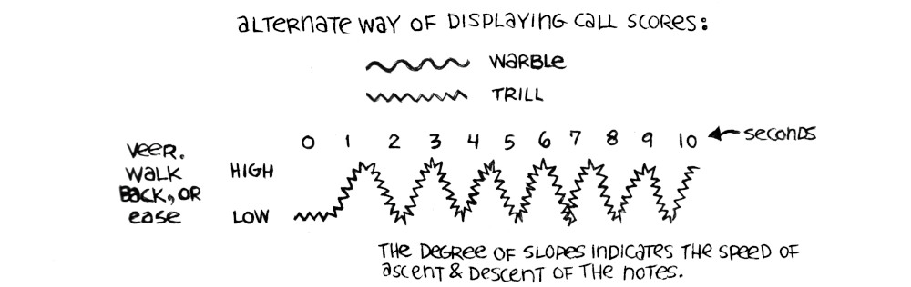

A bosun's whistle (or boatswain's call) is used on naval ships to pass commands to the crew. Its unique design makes it possible to vary the pitch and duration to convey a variety of information. The pitch penetrates the sound of the wind and of the sea.
A boatswain's call is a personal and treasured instrument. It is not shared with others.
Each sound produced by such a whistle is called a "pipe".
Some pipping requre a spoken order afterwards, while others are completely non-verbal.
It is possile to make many notes and tones with a boatswain's call. Variations are produced by changing the position of the fingers and by varying the breath blown into the moutn of the gun.
How to hold a boatswain's whistle
The thumb ought to be near the shackle, while the side of the buoy ought to lie against the palm of the hand with the last 3 fingers folded over the gun and buoy hole in a way that allows them to precisely control how the air comes out of the buoy.
Do not touch the edge of the hole in the buoy, or the one at the end of the gun(pee), as this will choke the sound.
There are 2 main notes:
Low Note: Produced by blowing steadily into the mouth piece while not blocking the buoy hole with the fingers.
High note: produced by controlling the air coming out of the buoy hole by closing fingers around the buoy.
And there are 3 tones:
Trill (rattled tone): Place tongue at the front of the mouth with the end curled behind the teeth, then roll your R's.
Warble (undulating note): Similar to a trill, but not as fast. Wiggle tongue up and down and side to side in your mouth while blowing.
Smooth (plain note): Produced the same way as when blowing in an ordinary whistle, with notes that are raised or lowered by blowing harder or lighter.
To learn how to pipe well, practice the aforementionned basic sounds, adopt a good posture, breathe well, and pay attention to timing.
Open hand (least pressure, produces a soft, clear note) => Clinched hand (most pressure, produces a shrill clear note).
Boatswain's Call Score
Straight line for a smooth(plain) note.
Dotted line for rattled (trill) note.
Broken line for an undulating(warble) note.
Full arrowheads for full breath.
Half arrowheads for gentle breath.
Some calls require a sharp finish, which is achieved by putting the tongue over the opening of the mouth piece. This is different than a break, where the person piping would pause to take a breath.
Breaks are marked by a "|" with the number of seconds written above it (if more than 1 second). If the break is less than 1 second the notes ought to be slurred smoothly.
The number of seconds for each pipe is marked above the bar.
Call Mates
Piped to assemble the crew(mates).
Clinched hand position throughout, followed by a Peep of 1 second duration, another peep of the same duration, a 1/2 second break, a 1 second long peep and a last peep blown with a hard breath.
Stand By
Note that the call for stand by is also piped before the following: set taut, stand by and lay in.
Start with a curved hand position and rapidly change to a clinch to produce a rising peep. Follow this with a short slurred peep with a hard finish.
Lay Up
Piped to ask crew to go aloft.
Start with a stand by call, follow the long peep by a series of 3 sharp peeps with a 1 second interval between each series of peeps. Slow down the last 3 peeps.
Walk Back, Veer, or Ease
 Alternate Way of Displaying Call Scores:
Warble
Trill
Score for Veer, Walk Back or Ease.
The degree of slopes indicates the speed of ascent and descent of the notes.
General Call
The general call often preceeds other calls, to draw attention to the coming announcement (requires verbal addition).
![a score showing how to play the call Dinner or Supper. The notes on the score start at low, then ease up to high for 4 seconds, then back slowly down to low with a break. Then it shoots up from low to high rapidly, then back down lasting 5 seconds, after which there are 2 peeps before a smooth line rises from low to high very rapidly before dropping to low just as fast, then rising between high and low with a 3 second warble before dropping to low with a break. Finally, it starts from high for 2 short peeps, before making a trill from high to low and then halfway up to high before stopping.](../media/content/bs_19.jpg) Blue Jackets Manual, 1940
Blue Jackets Manual, 1940
Below is an example of an advanced call. It is long and requires good breathing control.
Dinner or Supper call
This call is non-verbal, it is piped to announce meals.
It is possible to tune a new boatswain's call by removing some material to enlarge the wind edge of the buoy hole to ensure that the notes are sharp and clear. Others are sometimes too open at the pee and have to be flattened or soldered at the sides of the opening to fill the area between it and the buoy.